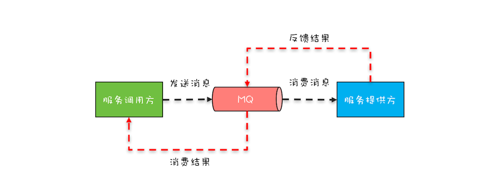
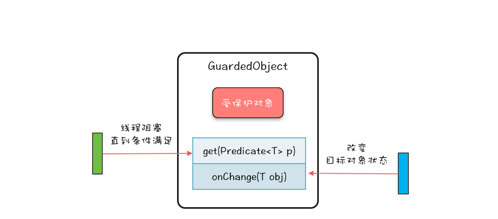

- 00 学习攻略 如何才能学好并发编程？.md
- 00 开篇词 你为什么需要学习并发编程？.md
- 01 可见性、原子性和有序性问题：并发编程Bug的源头.md
- 02 Java内存模型：看Java如何解决可见性和有序性问题.md
- 03 互斥锁（上）：解决原子性问题.md
- 04 互斥锁（下）：如何用一把锁保护多个资源？.md
- 05 一不小心就死锁了，怎么办？.md
- 06 用“等待-通知”机制优化循环等待.md
- 07 安全性、活跃性以及性能问题.md
- 08 管程：并发编程的万能钥匙.md
- 09 Java线程（上）：Java线程的生命周期.md
- 10 Java线程（中）：创建多少线程才是合适的？.md
- 11 Java线程（下）：为什么局部变量是线程安全的？.md
- 12 如何用面向对象思想写好并发程序？.md
- 13 理论基础模块热点问题答疑.md
- 14 Lock和Condition（上）：隐藏在并发包中的管程.md
- 15 Lock和Condition（下）：Dubbo如何用管程实现异步转同步？.md
- 16 Semaphore：如何快速实现一个限流器？.md
- 17 ReadWriteLock：如何快速实现一个完备的缓存？.md
- 18 StampedLock：有没有比读写锁更快的锁？.md
- 19 CountDownLatch和CyclicBarrier：如何让多线程步调一致？.md
- 20 并发容器：都有哪些“坑”需要我们填？.md
- 21 原子类：无锁工具类的典范.md
- 22 Executor与线程池：如何创建正确的线程池？.md
- 23 Future：如何用多线程实现最优的“烧水泡茶”程序？.md
- 24 CompletableFuture：异步编程没那么难.md
- 25 CompletionService：如何批量执行异步任务？.md
- 26 Fork_Join：单机版的MapReduce.md
- 27 并发工具类模块热点问题答疑.md
- 28 Immutability模式：如何利用不变性解决并发问题？.md
- 29 Copy-on-Write模式：不是延时策略的COW.md
- 3 个用户来信 打开一个新的并发世界.md
- 30 线程本地存储模式：没有共享，就没有伤害.md
- 31 Guarded Suspension模式：等待唤醒机制的规范实现.md
- 32 Balking模式：再谈线程安全的单例模式.md
- 33 Thread-Per-Message模式：最简单实用的分工方法.md
- 34 Worker Thread模式：如何避免重复创建线程？.md
- 35 两阶段终止模式：如何优雅地终止线程？.md
- 36 生产者-消费者模式：用流水线思想提高效率.md
- 37 设计模式模块热点问题答疑.md
- 38 案例分析（一）：高性能限流器Guava RateLimiter.md
- 39 案例分析（二）：高性能网络应用框架Netty.md
- 40 案例分析（三）：高性能队列Disruptor.md
- 41 案例分析（四）：高性能数据库连接池HiKariCP.md
- 42 Actor模型：面向对象原生的并发模型.md
- 43 软件事务内存：借鉴数据库的并发经验.md
- 44 协程：更轻量级的线程.md
- 45 CSP模型：Golang的主力队员.md
- 用户来信 真好，面试考到这些并发编程，我都答对了！.md
- 结束语 十年之后，初心依旧.md
31 Guarded Suspension模式：等待唤醒机制的规范实现
前不久，同事小灰工作中遇到一个问题，他开发了一个Web项目：Web版的文件浏览器，通过它用户可以在浏览器里查看服务器上的目录和文件。这个项目依赖运维部门提供的文件浏览服务，而这个文件浏览服务只支持消息队列（MQ）方式接入。消息队列在互联网大厂中用的非常多，主要用作流量削峰和系统解耦。在这种接入方式中，发送消息和消费结果这两个操作之间是异步的，你可以参考下面的示意图来理解。

消息队列（MQ）示意图
在小灰的这个Web项目中，用户通过浏览器发过来一个请求，会被转换成一个异步消息发送给MQ，等MQ返回结果后，再将这个结果返回至浏览器。小灰同学的问题是：给MQ发送消息的线程是处理Web请求的线程T1，但消费MQ结果的线程并不是线程T1，那线程T1如何等待MQ的返回结果呢？为了便于你理解这个场景，我将其代码化了，示例代码如下。
class Message{
String id;
String content;
}
//该方法可以发送消息
void send(Message msg){
//省略相关代码
}
//MQ消息返回后会调用该方法
//该方法的执行线程不同于
//发送消息的线程
void onMessage(Message msg){
//省略相关代码
}
//处理浏览器发来的请求
Respond handleWebReq(){
//创建一消息
Message msg1 = new
Message("1","{...}");
//发送消息
send(msg1);
//如何等待MQ返回的消息呢？
String result = ...;
}
看到这里，相信你一定有点似曾相识的感觉，这不就是前面我们在《15 | Lock和Condition（下）：Dubbo如何用管程实现异步转同步？》中曾介绍过的异步转同步问题吗？仔细分析，的确是这样，不过在那一篇文章中我们只是介绍了最终方案，让你知其然，但是并没有介绍这个方案是如何设计出来的，今天咱们再仔细聊聊这个问题，让你知其所以然，遇到类似问题也能自己设计出方案来。
Guarded Suspension模式
上面小灰遇到的问题，在现实世界里比比皆是，只是我们一不小心就忽略了。比如，项目组团建要外出聚餐，我们提前预订了一个包间，然后兴冲冲地奔过去，到那儿后大堂经理看了一眼包间，发现服务员正在收拾，就会告诉我们：“您预订的包间服务员正在收拾，请您稍等片刻。”过了一会，大堂经理发现包间已经收拾完了，于是马上带我们去包间就餐。
我们等待包间收拾完的这个过程和小灰遇到的等待MQ返回消息本质上是一样的，都是等待一个条件满足：就餐需要等待包间收拾完，小灰的程序里要等待MQ返回消息。
那我们来看看现实世界里是如何解决这类问题的呢？现实世界里大堂经理这个角色很重要，我们是否等待，完全是由他来协调的。通过类比，相信你也一定有思路了：我们的程序里，也需要这样一个大堂经理。的确是这样，那程序世界里的大堂经理该如何设计呢？其实设计方案前人早就搞定了，而且还将其总结成了一个设计模式：Guarded Suspension。所谓Guarded Suspension，直译过来就是“保护性地暂停”。那下面我们就来看看，Guarded Suspension模式是如何模拟大堂经理进行保护性地暂停的。
下图就是Guarded Suspension模式的结构图，非常简单，一个对象GuardedObject，内部有一个成员变量——受保护的对象，以及两个成员方法——get(Predicate<T> p)和onChanged(T obj)方法。其中，对象GuardedObject就是我们前面提到的大堂经理，受保护对象就是餐厅里面的包间；受保护对象的get()方法对应的是我们的就餐，就餐的前提条件是包间已经收拾好了，参数p就是用来描述这个前提条件的；受保护对象的onChanged()方法对应的是服务员把包间收拾好了，通过onChanged()方法可以fire一个事件，而这个事件往往能改变前提条件p的计算结果。下图中，左侧的绿色线程就是需要就餐的顾客，而右侧的蓝色线程就是收拾包间的服务员。

Guarded Suspension模式结构图
GuardedObject的内部实现非常简单，是管程的一个经典用法，你可以参考下面的示例代码，核心是：get()方法通过条件变量的await()方法实现等待，onChanged()方法通过条件变量的signalAll()方法实现唤醒功能。逻辑还是很简单的，所以这里就不再详细介绍了。
class GuardedObject<T>{
//受保护的对象
T obj;
final Lock lock =
new ReentrantLock();
final Condition done =
lock.newCondition();
final int timeout=1;
//获取受保护对象
T get(Predicate<T> p) {
lock.lock();
try {
//MESA管程推荐写法
while(!p.test(obj)){
done.await(timeout,
TimeUnit.SECONDS);
}
}catch(InterruptedException e){
throw new RuntimeException(e);
}finally{
lock.unlock();
}
//返回非空的受保护对象
return obj;
}
//事件通知方法
void onChanged(T obj) {
lock.lock();
try {
this.obj = obj;
done.signalAll();
} finally {
lock.unlock();
}
}
}
扩展Guarded Suspension模式
上面我们介绍了Guarded Suspension模式及其实现，这个模式能够模拟现实世界里大堂经理的角色，那现在我们再来看看这个“大堂经理”能否解决小灰同学遇到的问题。
Guarded Suspension模式里GuardedObject有两个核心方法，一个是get()方法，一个是onChanged()方法。很显然，在处理Web请求的方法handleWebReq()中，可以调用GuardedObject的get()方法来实现等待；在MQ消息的消费方法onMessage()中，可以调用GuardedObject的onChanged()方法来实现唤醒。
//处理浏览器发来的请求
Respond handleWebReq(){
//创建一消息
Message msg1 = new
Message("1","{...}");
//发送消息
send(msg1);
//利用GuardedObject实现等待
GuardedObject<Message> go
=new GuardObjec<>();
Message r = go.get(
t->t != null);
}
void onMessage(Message msg){
//如何找到匹配的go？
GuardedObject<Message> go=???
go.onChanged(msg);
}
但是在实现的时候会遇到一个问题，handleWebReq()里面创建了GuardedObject对象的实例go，并调用其get()方等待结果，那在onMessage()方法中，如何才能够找到匹配的GuardedObject对象呢？这个过程类似服务员告诉大堂经理某某包间已经收拾好了，大堂经理如何根据包间找到就餐的人。现实世界里，大堂经理的头脑中，有包间和就餐人之间的关系图，所以服务员说完之后大堂经理立刻就能把就餐人找出来。
我们可以参考大堂经理识别就餐人的办法，来扩展一下Guarded Suspension模式，从而使它能够很方便地解决小灰同学的问题。在小灰的程序中，每个发送到MQ的消息，都有一个唯一性的属性id，所以我们可以维护一个MQ消息id和GuardedObject对象实例的关系，这个关系可以类比大堂经理大脑里维护的包间和就餐人的关系。
有了这个关系，我们来看看具体如何实现。下面的示例代码是扩展Guarded Suspension模式的实现，扩展后的GuardedObject内部维护了一个Map，其Key是MQ消息id，而Value是GuardedObject对象实例，同时增加了静态方法create()和fireEvent()；create()方法用来创建一个GuardedObject对象实例，并根据key值将其加入到Map中，而fireEvent()方法则是模拟的大堂经理根据包间找就餐人的逻辑。
class GuardedObject<T>{
//受保护的对象
T obj;
final Lock lock =
new ReentrantLock();
final Condition done =
lock.newCondition();
final int timeout=2;
//保存所有GuardedObject
final static Map<Object, GuardedObject>
gos=new ConcurrentHashMap<>();
//静态方法创建GuardedObject
static <K> GuardedObject
create(K key){
GuardedObject go=new GuardedObject();
gos.put(key, go);
return go;
}
static <K, T> void
fireEvent(K key, T obj){
GuardedObject go=gos.remove(key);
if (go != null){
go.onChanged(obj);
}
}
//获取受保护对象
T get(Predicate<T> p) {
lock.lock();
try {
//MESA管程推荐写法
while(!p.test(obj)){
done.await(timeout,
TimeUnit.SECONDS);
}
}catch(InterruptedException e){
throw new RuntimeException(e);
}finally{
lock.unlock();
}
//返回非空的受保护对象
return obj;
}
//事件通知方法
void onChanged(T obj) {
lock.lock();
try {
this.obj = obj;
done.signalAll();
} finally {
lock.unlock();
}
}
}
这样利用扩展后的GuardedObject来解决小灰同学的问题就很简单了，具体代码如下所示。
//处理浏览器发来的请求
Respond handleWebReq(){
int id=序号生成器.get();
//创建一消息
Message msg1 = new
Message(id,"{...}");
//创建GuardedObject实例
GuardedObject<Message> go=
GuardedObject.create(id);
//发送消息
send(msg1);
//等待MQ消息
Message r = go.get(
t->t != null);
}
void onMessage(Message msg){
//唤醒等待的线程
GuardedObject.fireEvent(
msg.id, msg);
}
总结
Guarded Suspension模式本质上是一种等待唤醒机制的实现，只不过Guarded Suspension模式将其规范化了。规范化的好处是你无需重头思考如何实现，也无需担心实现程序的可理解性问题，同时也能避免一不小心写出个Bug来。但Guarded Suspension模式在解决实际问题的时候，往往还是需要扩展的，扩展的方式有很多，本篇文章就直接对GuardedObject的功能进行了增强，Dubbo中DefaultFuture这个类也是采用的这种方式，你可以对比着来看，相信对DefaultFuture的实现原理会理解得更透彻。当然，你也可以创建新的类来实现对Guarded Suspension模式的扩展。
Guarded Suspension模式也常被称作Guarded Wait模式、Spin Lock模式（因为使用了while循环去等待），这些名字都很形象，不过它还有一个更形象的非官方名字：多线程版本的if。单线程场景中，if语句是不需要等待的，因为在只有一个线程的条件下，如果这个线程被阻塞，那就没有其他活动线程了，这意味着if判断条件的结果也不会发生变化了。但是多线程场景中，等待就变得有意义了，这种场景下，if判断条件的结果是可能发生变化的。所以，用“多线程版本的if”来理解这个模式会更简单。
课后思考
有同学觉得用done.await()还要加锁，太啰嗦，还不如直接使用sleep()方法，下面是他的实现，你觉得他的写法正确吗？
//获取受保护对象
T get(Predicate<T> p) {
try {
while(!p.test(obj)){
TimeUnit.SECONDS
.sleep(timeout);
}
}catch(InterruptedException e){
throw new RuntimeException(e);
}
//返回非空的受保护对象
return obj;
}
//事件通知方法
void onChanged(T obj) {
this.obj = obj;
}
欢迎在留言区与我分享你的想法，也欢迎你在留言区记录你的思考过程。感谢阅读，如果你觉得这篇文章对你有帮助的话，也欢迎把它分享给更多的朋友。
© 2019 - 2023 Liangliang Lee. Powered by gin and hexo-theme-book.